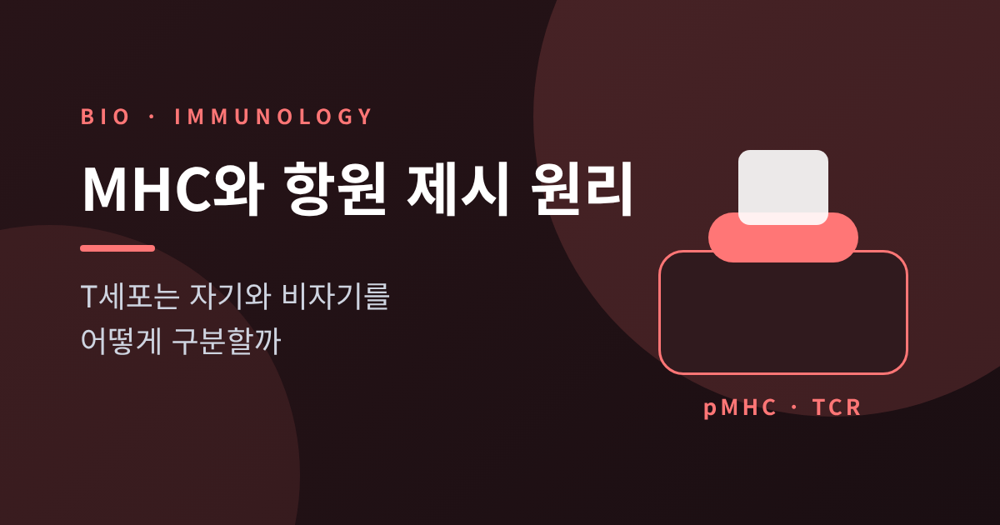
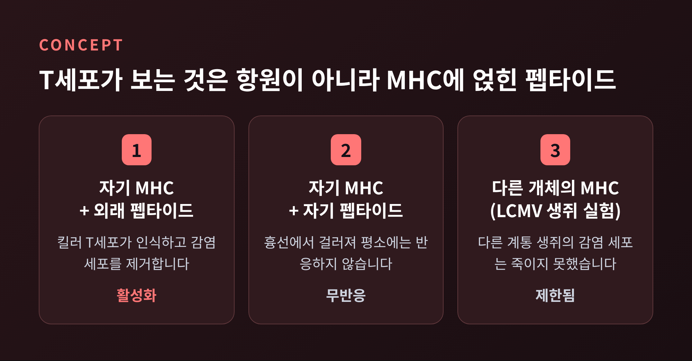
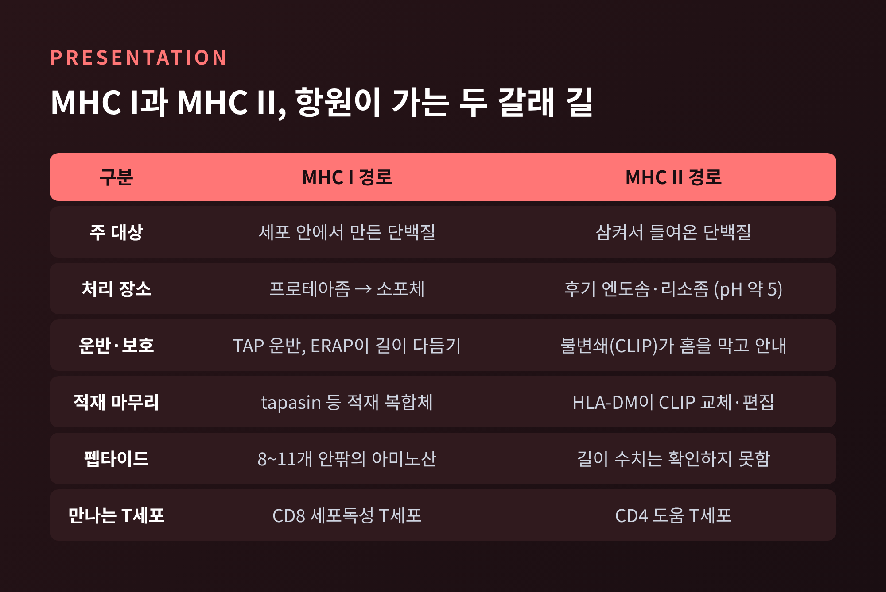
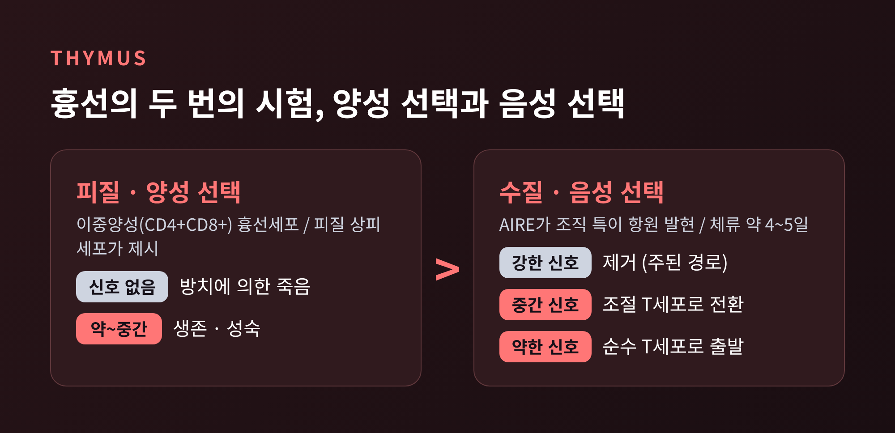
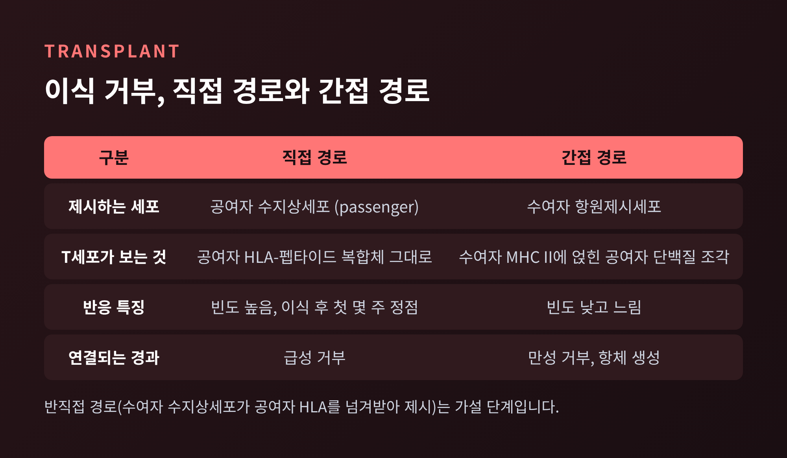
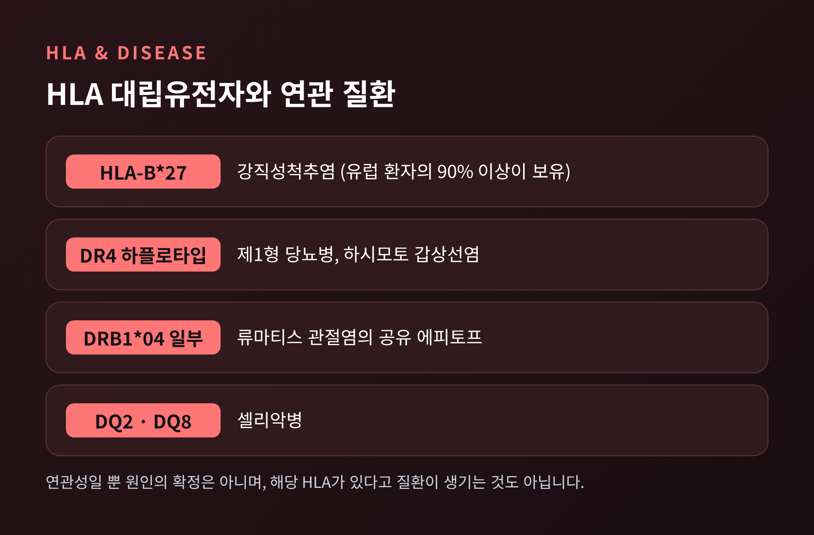

이번 글에서는 MHC와 항원 제시의 원리를 정리해 보겠습니다. T세포는 항원을 혼자 알아보지 못하고, 세포 표면의 MHC 분자가 펩타이드를 받쳐 들어야 비로소 반응합니다. MHC I과 II의 처리 경로, 흉선의 선택 과정, 이식 거부와 자가면역까지 한 줄기로 따라가 보겠습니다.
1970년대 초, 호주 캔버라의 John Curtin 의학연구소에서 Doherty와 Zinkernagel이 생쥐 실험을 했습니다. 림프구성 맥락수막염 바이러스(LCMV)에 감염된 생쥐에서 킬러 T세포를 얻어, 시험관에서 감염 세포를 죽이게 한 것입니다.
결과가 의외였습니다. 같은 바이러스에 감염된 세포라도 다른 계통 생쥐의 것이면 죽이지 못했습니다. 감염 세포가 같은 MHC, 즉 주조직적합항원을 가져야 했습니다.
노벨상 위원회의 표현을 빌리면 림프구는 바이러스와 특정한 자기 분자를 "모두" 인식해야 합니다. 1974년 Nature에 실린 이 발견은 1996년 노벨 생리의학상으로 이어졌습니다.
그러니 T세포의 눈에 보이는 것은 항원 단독이 아닙니다. 'MHC 분자 + 그 홈에 끼워진 펩타이드', 이 한 쌍입니다. 사람의 MHC는 HLA라고 부르고, 클래스 I에 해당하는 HLA-A, HLA-B, HLA-C는 펩타이드가 붙는 부위의 다형성이 특히 큽니다.

MHC I은 무거운 사슬 하나와 변하지 않는 β2-마이크로글로불린, 그리고 펩타이드로 이루어집니다. 홈은 8~11개 안팎의 아미노산을 붙들고, CD8 세포독성 T세포가 이를 확인합니다. 감염되거나 변이가 생긴 세포 안의 단백질 상태를 밖으로 중계하는 장치인 셈입니다.
경로는 네 걸음입니다.
첫째, 프로테아좀이 변성되거나 손상된 단백질을 잘게 분해합니다. 인터페론 감마가 있으면 절단 특성이 다른 면역프로테아좀이 만들어집니다.
둘째, 운반체 TAP이 이 조각들을 세포질에서 소포체로 밀어 넣습니다. 대략 8~16개 안팎의 길이를 선호합니다.
셋째, 소포체 안의 ERAP1·ERAP2가 N말단을 다듬어 홈에 맞는 길이로 만듭니다.
넷째, 펩타이드 적재 복합체가 일을 마무리합니다. tapasin이 TAP과 MHC I을 이어 주고, 안정한 결합이 이루어진 복합체만 골지체를 거쳐 세포 표면으로 나갑니다. 빈 MHC I은 완전한 복합체보다 5~8배 빠르게 안으로 되돌려진다고 보고되어 있습니다. 불량품을 오래 두지 않는 품질 관리입니다.
MHC II는 α·β 두 사슬로 이루어지고, CD4 T세포가 알아봅니다. 대식세포나 수지상세포가 외부 단백질을 삼키면, 후기 엔도솜과 리소좀에서 분해됩니다. 이 구획은 pH가 약 5.0 정도로 산성이고 단백질 분해 활성이 높습니다.
그런데 여기에는 문제가 하나 있습니다. 새로 만들어진 MHC II가 소포체에서 자기 세포의 펩타이드를 먼저 붙잡아 버리면 안 됩니다. 그래서 불변쇄(CD74)라는 샤페론이 MHC II를 엔도솜으로 안내하고, 홈을 막아 둡니다. 엔도솜의 카텝신이 불변쇄를 잘라 내면 CLIP이라는 조각만 홈에 남습니다.
이 자리표시자를 떼어 내고 항원 펩타이드를 끼우는 것이 HLA-DM입니다. HLA-DM은 단순한 문지기가 아닙니다. 운동학적으로 안정하게 붙는 펩타이드를 고르는 편집자 역할도 합니다. 면역우세 에피토프는 살리고 은닉 에피토프는 억제한다고 알려져 있습니다.
정리하면 이렇습니다. 내부에서 만든 것은 프로테아좀·TAP·소포체를 거쳐 MHC I로, 외부에서 삼킨 것은 엔도솜·불변쇄·HLA-DM을 거쳐 MHC II로 갑니다.

다만 이 구분은 절대적이지 않습니다. 수지상세포는 외부에서 들어온 항원을 MHC I에 올리는 교차제시도 합니다. 1990년 Rock 등이 보인 현상으로, 바이러스에 직접 감염되지 않은 수지상세포가 CD8 T세포를 깨우는 길을 열어 줍니다. 세포질 경로와 프로테아좀·TAP에 의존하지 않는 액포 경로가 함께 보고되지만, 세부 기전은 아직 분명하지 않다고 리뷰들은 말합니다.
그렇다면 T세포는 자기 MHC만 보고 자기 펩타이드에는 반응하지 않도록 어떻게 길러질까요. 답은 흉선에 있습니다.
피질에서는 CD4와 CD8을 모두 가진 이중양성 흉선세포가 첫 시험을 치릅니다. 피질 흉선상피세포의 자기 펩타이드-MHC에 약하거나 중간 정도로 반응해야 살아남습니다. 이것이 양성 선택입니다. 전혀 반응하지 못하면 '방치에 의한 죽음'을 맞습니다.
재미있는 점은 피질 상피세포가 일반 조직과 다른 도구를 쓴다는 것입니다. 프로테아좀 소단위 β5t가 없으면 CD8 T세포가 제대로 만들어지지 않고, 카텝신 L과 흉선 특이 세린 프로테아제는 CD4 T세포 발달에 필요합니다.
수질에서는 두 번째 시험이 열립니다. 이번에는 너무 강하게 반응하는 세포를 걸러 냅니다. 음성 선택입니다. 수질 흉선상피세포는 AIRE라는 전사 조절자의 힘으로, 본래 다른 조직에서만 만들어지는 단백질을 흉선 안에서 대신 발현합니다. 연구에 따르면 각 조직 제한 항원은 한 시점에 수질 상피세포의 약 1~5%에서만 발현됩니다. AIRE가 없으면 사람과 생쥐 모두 자가면역이 생깁니다.
선택의 결과는 신호 세기에 따라 갈립니다. 강하면 제거되고, 중간이면 조절 T세포로 방향이 바뀌며, 약하면 순수 T세포로 성숙해 흉선을 떠납니다. 조절 T세포의 작동은 지난 글에서 다루었으므로 여기서는 한 줄로 갈음하겠습니다.

한계도 분명합니다. 한 리뷰는 단일양성 흉선세포가 수질에 머무는 시간이 4~5일 안팎이며, 이 짧은 체류와 상피세포의 빠른 교체가 중추 관용의 약한 고리일 수 있다고 짚었습니다. 고친화 T세포가 수용체 편집이나 무반응 상태로 남는 경우도 있습니다. 흉선은 완벽한 검문소가 아닙니다.
흉선 교육을 이해하면 이식 거부가 설명됩니다. 흉선 음성 선택은 '자기 MHC에 얹힌 자기 펩타이드'에 강하게 반응하는 세포만 제거합니다. 남의 HLA에 반응하는 세포는 시험 문제로 출제된 적이 없는 셈이어서 걸러지지 않습니다.
그 결과 한 리뷰는 수여자 T세포의 최대 10%가 공여자 동종항원에 반응할 수 있다고 기술합니다. 감염 방어를 위해 놓인 T세포 수용체가 본래 교차반응적이라는 점도 원인으로 꼽힙니다. 예전에는 이식 면역을 별개의 특수한 현상으로 여겼지만, 지금은 평소의 항원 제시 규칙이 낯선 HLA를 만난 결과로 이해합니다.
인식 경로는 크게 둘입니다.
직접 경로에서는 수여자 T세포가 공여자 세포의 HLA-펩타이드 복합체를 온전한 모습으로 봅니다. 공여자 유래 수지상세포가 수여자의 림프절로 이동해 자극하며, 이식 후 첫 몇 주 동안 급성 거부를 이끄는 것으로 설명됩니다.
간접 경로에서는 수여자의 항원제시세포가 공여자 단백질을 삼켜 처리한 뒤 수여자 자신의 MHC II에 올립니다. 반응 빈도는 낮고 느리지만, 도움 T세포가 B세포를 도와 항체를 만들게 하므로 만성 거부와 항체 생성의 중심으로 지목됩니다. 수여자 수지상세포가 공여자 HLA를 통째로 넘겨받아 제시한다는 반직접 경로는 아직 가설로 다루어집니다.

HLA 유형을 맞추는 일이 중요한 이유도 여기서 나옵니다. HLA는 인간 게놈에서 가장 다형적인 영역입니다. IPD-IMGT/HLA 데이터베이스에는 2019년 8월 기준 24,093개의 대립유전자가 올라 있고, HLA-B만 6,500개가 넘습니다. 이 수치는 계속 늘어나는 중이어서 현재 값은 확인하지 못했습니다.
HLA의 다양성은 집단이 병원체에 대응하는 데 도움이 되는 반면, 개인 수준에서는 특정 질환과 연결되기도 합니다. 대표적인 예가 강직성척추염입니다. 유럽 환자의 90% 이상이 HLA-B27을 가집니다. 흥미롭게도 B2705와 B*2709는 116번 아미노산 하나만 달라도 펩타이드 특이성과 T세포 인식이 달라지고, 하나는 질환 쪽, 다른 하나는 보호 쪽으로 분류됩니다.
클래스 II에서는 DR4 하플로타입이 제1형 당뇨병과 하시모토 갑상선염에, DRB1*04 일부 대립유전자가 지닌 '공유 에피토프'가 류마티스 관절염에, DQ2·DQ8이 셀리악병에 연관됩니다.

주의할 점이 있습니다. 이는 '연관'이지 '원인'의 확정이 아닙니다. 분자 모방, 자기 펩타이드 제시의 변화, 불완전한 흉선 관용, 소포체 안 단백질 오접힘 등이 가설로 제시될 뿐입니다. 해당 HLA를 가졌다고 질환이 생기는 것도 아닙니다.
정리하면 이렇습니다.
T세포의 자기 구분은 '무엇이 있는가'가 아니라 '어떤 MHC가 무엇을 들고 있는가'를 읽는 일입니다. MHC I과 II는 안과 밖의 단백질 소식을 서로 다른 길로 전하고, 흉선은 그 규칙에 맞춰 T세포를 걸러 냅니다. 이식 거부와 자가면역은 그 규칙이 낯선 HLA나 흔들린 관용을 만났을 때 드러나는 모습입니다.
이 글은 교양 차원의 설명이며, 개인의 건강 판단이나 HLA 검사 해석은 의료진과 상의하셔야 합니다.
"T세포는 항원을 보는 것이 아니라, MHC가 내민 손 위의 항원을 봅니다."
문득 내 몸의 세포가 매 순간 자기 단백질의 조각을 내밀고 있다는 사실을 떠올려 보시기 바랍니다. 면역계는 그 수많은 조각을 읽으며, 오늘도 나를 해치지 않을 만큼만 경계하고 있습니다.